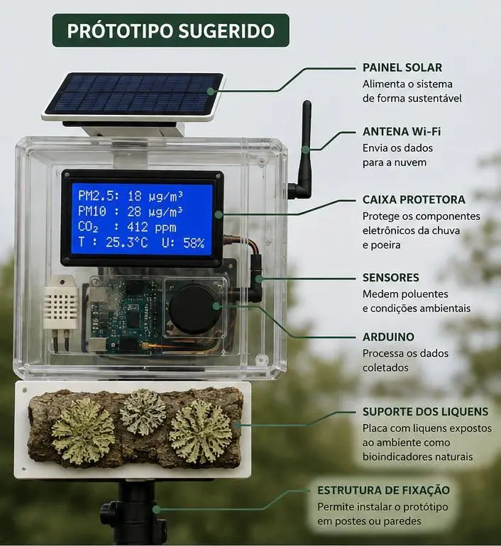

O ar da sua rua, lido por sensores e confirmado por líquens
Cortiça é um protótipo automatizado de monitoramento da qualidade do ar, construído com Arduino e sensores de baixo custo, que usa líquens como bioindicador natural para confirmar o que a eletrônica mede. É a pesquisa "Análise dos bioindicadores da qualidade do ar por meio de Arduino e robótica", em desenvolvimento na Bahia.
O Nordeste é a região que menos sabe o que respira
O Brasil tem 430 estações de monitoramento da qualidade do ar, mas elas são caras e concentradas: 80,3% ficam no Sudeste. A região Nordeste, onde moramos, tem apenas 4 — menos de 2% do total (Vormittag et al., 2021). Para efeito de comparação, o relatório da IQAir de 2023 contabilizou mais de 30 mil estações espalhadas pelo mundo: o Nordeste sozinho representa uma fração ínfima disso.
Um bioindicador que a ciência já confia há décadas
Líquens são a associação simbiótica entre um fungo e uma alga ou cianobactéria. Sem raízes nem cutícula protetora, absorvem umidade e substâncias direto do ar por toda a sua superfície — o chamado talo. Isso os torna extremamente sensíveis aos mesmos poluentes que o protótipo mede: SO₂, NOₓ, PM2.5 e PM10. A exposição a esses poluentes altera o pH da superfície do líquen, entope seus poros e muda sua cor.
No Cortiça, uma placa com líquens fica exposta ao lado dos sensores eletrônicos, e um sensor de cor acompanha o talo continuamente. Quando o sinal biológico (a mudança de cor) e o dado do sensor eletrônico apontam na mesma direção, a leitura ganha uma camada extra de confiança — validação cruzada entre eletrônica e biologia.
Seis partes trabalhando juntas, dentro de uma case impressa em 3D
O protótipo é montado com componentes de plataforma IDE Arduino, testados antes em simulação (Tinkercad e Wokwi) e depois na construção física. Cada parte tem uma função clara:

Protótipo sugerido para a montagem final — a estrutura de fixação permite instalar o dispositivo em postes ou paredes.
Sensores de poluentes
MQ-136 mede SO₂, MQ-135 mede NOₓ e o PMS5003 mede material particulado (PM2.5 e PM10) — os mesmos poluentes que afetam os líquens.
Sensor de cor TCS34725
Acompanha a placa de líquens e detecta mudanças de cor causadas pela exposição ao SO₂, convertendo a leitura em valores RGB + C.
Arduino
O núcleo do sistema: lê os sensores, aplica os limiares de qualidade do ar e decide o que mostrar nos indicadores.
Painel LCD I2C 16x2 e LEDs
O LCD mostra os dados numéricos para leitura precisa; os LEDs vermelho e verde dão um alerta simples de "ar estável" ou "ar instável".
Case impressa em 3D
Estrutura em termoplástico (impressão 3D), escolhida por resistência, durabilidade e custo-benefício para instalação ao ar livre.
Placa de líquens
Serve como referência biológica, exposta ao ambiente lado a lado com os sensores eletrônicos.
Todos os seus protótipos, numa única conta
Depois de instalado, cada protótipo é vinculado à sua conta com um código próprio. Se você tiver mais de um — um em casa, outro no trabalho, outro emprestado para um vizinho — todos aparecem separados, com histórico e gráficos individuais.
Os dados chegam por Wi-Fi assim que são medidos, então a central sempre mostra a leitura mais recente, além do histórico dos últimos dias.
Nota técnica: os testes atuais usam Arduino sem conectividade. Para alimentar essa central, o próximo protótipo físico vai precisar de um módulo Wi-Fi (como um ESP32 no lugar do Arduino, ou um shield ESP8266) para enviar as leituras à nuvem.
Cadastrar um protótipoTrês passos até acompanhar seu primeiro protótipo
Crie sua conta
Cadastro simples com e-mail e senha, sem custo durante a fase de pesquisa.
Vincule o protótipo
Informe o código do dispositivo para associá-lo à sua conta.
Acompanhe os dados
Veja leituras em tempo real e o histórico direto na central, de qualquer lugar.
Um projeto de iniciação científica, pensado para crescer
Cortiça é desenvolvido por Gabriel, Vitória e Bryan, estudantes da Escola SESI Anísio Teixeira em Vitória da Conquista (BA), como parte da iniciação científica do GEMAT — Grupo de Pesquisa em Matemática e suas Tecnologias. O projeto une programação e biologia, e está alinhado aos Objetivos de Desenvolvimento Sustentável da ONU: saúde e bem-estar (ODS 3), cidades sustentáveis (ODS 11) e ação climática (ODS 13). Se os testes de campo confirmarem os resultados, a ideia é abrir o cadastro para mais protótipos e mais pessoas interessadas em saber o que respiram.
Quer acompanhar o ar da sua região?
Crie uma conta para acessar a central assim que o seu protótipo estiver pronto, ou entre em contato para saber mais sobre o projeto.